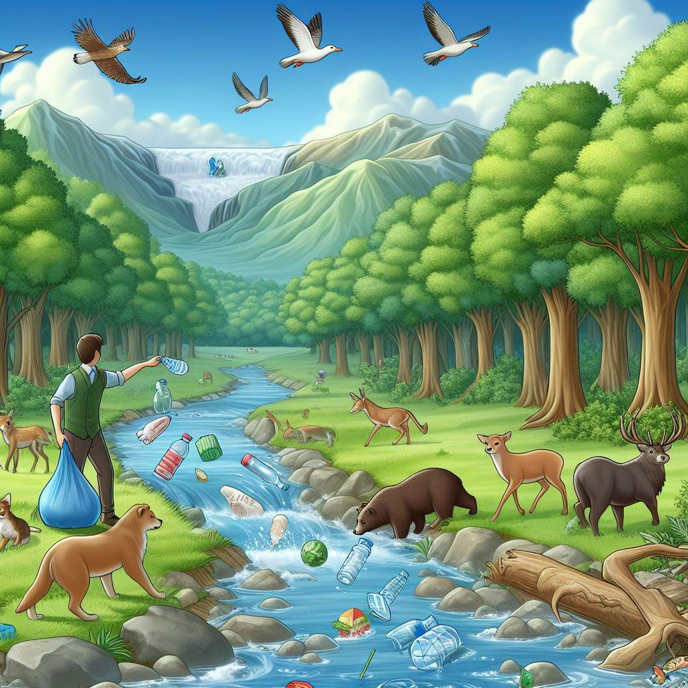

¡ADIVINA LAS PROBLEMÁTICAS!
¡Encuentra las acciones que perjudican a los animales con un clic!
Descripción del Juego
¡Adivina las Problemáticas! es un juego educativo en el que los jugadores deben identificar acciones negativas que afectan a los animales en diversas imágenes. El objetivo es concienciar sobre el impacto de ciertas actividades humanas en el medio ambiente y la fauna.
Reglas del Juego
- Haz clic en las áreas de la imagen que representan acciones perjudiciales para los animales.
- Recibirás una descripción de cada acción perjudicial que encuentres.
- Intenta encontrar todas las problemáticas en cada imagen para avanzar.
- El juego se puede reiniciar para volver a jugar.

Link al Repositorio
Puedes encontrar el código fuente de este juego en el siguiente repositorio de GitHub.